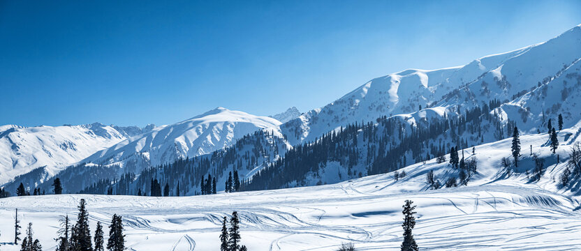
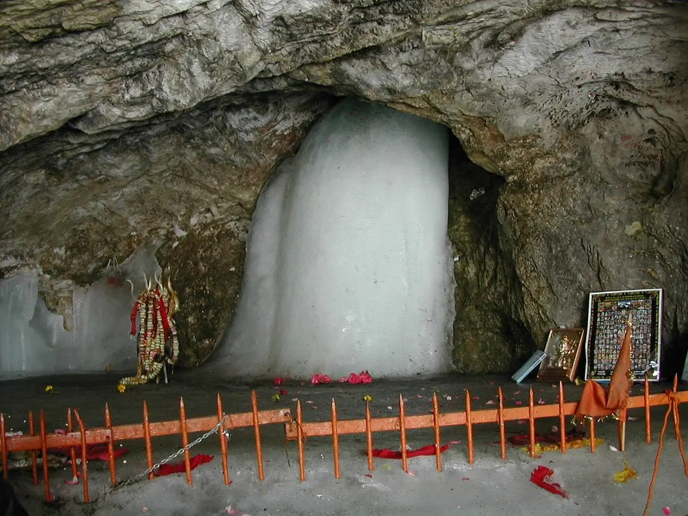
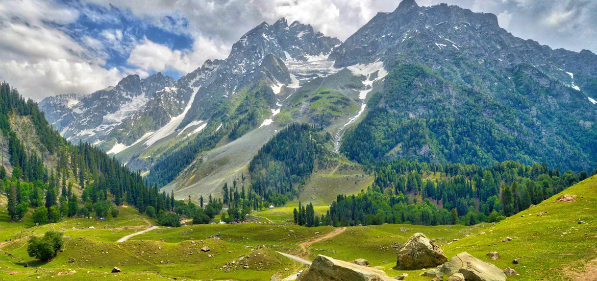
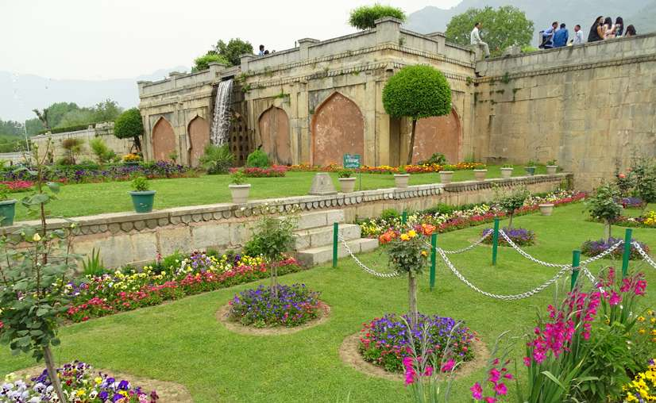
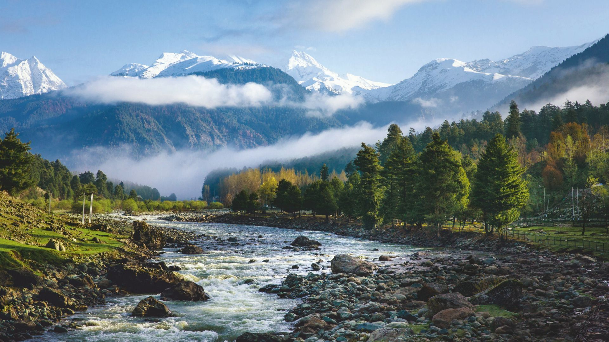

A Journey Through Paradise on Earth

Gulmarg, the "Meadow of Flowers," is a world-renowned ski destination and hill station.
It is famous for the Gulmarg Gondola, one of the highest cable cars in the world, and its breathtaking snow-covered peaks that attract winter sports enthusiasts from across the globe.

Dal lake is known as the "Jewel in the crown of Kashmir," Dal Lake is the heart of Srinagar.
It is famous for its iconic Shikara rides, floating vegetable markets, and beautifully carved houseboats that offer a unique stay on the calm, reflective waters.

A sacred Hindu shrine located at high altitude, the Amarnath Cave is famous for the natural ice stalagmite (Shiva Lingam) that waxes and wanes with the phases of the moon.
Thousands of pilgrims undertake the challenging "Amarnath Yatra" every year to seek blessings.

Sonamarg, or the "Meadow of Gold," is a stunning valley surrounded by glaciers and alpine lakes.
It serves as the gateway to the ancient Silk Road and is a popular base for trekking to the Thajiwas Glacier and the high-altitude Great Lakes of Kashmir.

Built by Asif Khan in 1633, Nishat Bagh is a magnificent 12-terraced Mughal garden.
It is located on the eastern bank of Dal Lake and is famous for its giant Chinar trees, colorful flower beds, and cascading water fountains that represent classic Persian architecture.

Known as the "Valley of Shepherds," Pahalgam is situated on the banks of the Lidder River.
With its lush green meadows, pine forests, and proximity to the beautiful Betaab Valley, it is a favorite destination for nature lovers and film-makers alike.